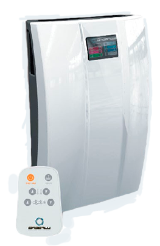
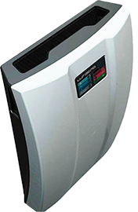

Компактные вентиляционные установки для дома и офиса iFresh
Впусти свежий воздух в свой дом

Вам нужна вентиляция, если
Утром тяжело вставать и часто болит голова
Дети часто болеют и плохо учатся
В Вашей квартире душно и влажно
Что изменится с появлением вентиляции в Вашем доме?
Улучшится настроение
Улучшится самочувствие
Станет комфортно дышать
Станет комфортно спать
Почему именно iFresh?
Чистый воздух в квартире
Нет сквозняков
В квартире свежо и тепло
В квартире комфортно спать
Оцените быстрый и чистый монтаж!
Монтаж
Об iFresh
Характеристики
Основные характеристики
Производитель
(Россия)
Модель
LFU iFresh
Тип размещения
Внутренний
Режим работы
Приток
Число режимов работы
3
Физические характеристики
Высота, мм
594
Ширина, мм
443
Глубина, мм
160
Вес, кг
7.5
Диаметр воздуховода, мм
125
Максимальный воздухообмен, м3/час
120
Минимальный воздухообмен, м3/час
40
Уровень шума минимум, дБ
21
Уровень шума максимум, дБ
39
Потребляемая мощность, Вт
840
Напряжение, В
220
Расходники
Угольный фильтр
Да
Пылевой фильтр F7
Да
Ресурс картриджей, мес.
6
Функциональные особенности
Подогрев воздуха
Да
Датчик загрязнения фильтра
Да
LCD дисплей
Да
Пульт ДУ
Да
Гарантия
Гарантия, лет
2
Срок службы, лет
10
Гарантия на монтаж, лет
3
Обмен и возврат, дней
14
Ответы на вопросы
К сожалению, большинство застройщиков экономит на принудительной приточной вентиляции при строительстве жилых домов. Обычно делается только естественная вытяжка в кухнях и санузлах, а приток воздуха предусматривается через естественные неплотности в деревянных окнах либо специальные клапаны в стеклопакетах. Это приводит к появлению двух проблем:
1. Естественная вытяжка работает плохо в связи с засорением воздушной шахты, либо установкой соседями сверху и снизу мощных вентиляторов. Бывали случаи когда воздух из вентиляционной шахты шёл наоборот в квартиру! В результате жильцы получают все запахи с соседских кухонь и санузлов. Кроме того, при плохой вентиляции в помещении перестаёт обновляться кислород, становится душно, повышается утомляемость, создаются условия для возникновения и роста плесени, развиваются различные заболевания.
2. Подача воздуха через окна в любых видах приводит к химическому и шумовому загрязнению помещения. Шум через открытые при проветривании окна мешает спать и приводит к нервным расстройствам. Воздух в городах давно уже не является чистым и попадает в помещение вместе с пылью, выхлопными газами, аллергенной пыльцой растений и другими видами загрязнений. Кроме того, в холодное время года проявляются сквозняки, что приводит ещё и к простудным заболеваниям.
Решить весь этот комплекс проблем поможет приточная установка iFresh. Она позволяет проветрить помещение и окружить себя чистым и свежим воздухом комфортной температуры, не открывая окна.
К сожалению, большинство застройщиков экономит на принудительной приточной вентиляции при строительстве жилых домов. Обычно делается только естественная вытяжка в кухнях и санузлах, а приток воздуха предусматривается через естественные неплотности в деревянных окнах либо специальные клапаны в стеклопакетах. Это приводит к появлению двух проблем:
1. Естественная вытяжка работает плохо в связи с засорением воздушной шахты, либо установкой соседями сверху и снизу мощных вентиляторов. Бывали случаи когда воздух из вентиляционной шахты шёл наоборот в квартиру! В результате жильцы получают все запахи с соседских кухонь и санузлов. Кроме того, при плохой вентиляции в помещении перестаёт обновляться кислород, становится душно, повышается утомляемость, создаются условия для возникновения и роста плесени, развиваются различные заболевания.
2. Подача воздуха через окна в любых видах приводит к химическому и шумовому загрязнению помещения. Шум через открытые при проветривании окна мешает спать и приводит к нервным расстройствам. Воздух в городах давно уже не является чистым и попадает в помещение вместе с пылью, выхлопными газами, аллергенной пыльцой растений и другими видами загрязнений. Кроме того, в холодное время года проявляются сквозняки, что приводит ещё и к простудным заболеваниям.
Решить весь этот комплекс проблем поможет приточная установка iFresh. Она позволяет проветрить помещение и окружить себя чистым и свежим воздухом комфортной температуры, не открывая окна.
К сожалению, большинство застройщиков экономит на принудительной приточной вентиляции при строительстве жилых домов. Обычно делается только естественная вытяжка в кухнях и санузлах, а приток воздуха предусматривается через естественные неплотности в деревянных окнах либо специальные клапаны в стеклопакетах. Это приводит к появлению двух проблем:
1. Естественная вытяжка работает плохо в связи с засорением воздушной шахты, либо установкой соседями сверху и снизу мощных вентиляторов. Бывали случаи когда воздух из вентиляционной шахты шёл наоборот в квартиру! В результате жильцы получают все запахи с соседских кухонь и санузлов. Кроме того, при плохой вентиляции в помещении перестаёт обновляться кислород, становится душно, повышается утомляемость, создаются условия для возникновения и роста плесени, развиваются различные заболевания.
2. Подача воздуха через окна в любых видах приводит к химическому и шумовому загрязнению помещения. Шум через открытые при проветривании окна мешает спать и приводит к нервным расстройствам. Воздух в городах давно уже не является чистым и попадает в помещение вместе с пылью, выхлопными газами, аллергенной пыльцой растений и другими видами загрязнений. Кроме того, в холодное время года проявляются сквозняки, что приводит ещё и к простудным заболеваниям.
Решить весь этот комплекс проблем поможет приточная установка iFresh. Она позволяет проветрить помещение и окружить себя чистым и свежим воздухом комфортной температуры, не открывая окна.
К сожалению, большинство застройщиков экономит на принудительной приточной вентиляции при строительстве жилых домов. Обычно делается только естественная вытяжка в кухнях и санузлах, а приток воздуха предусматривается через естественные неплотности в деревянных окнах либо специальные клапаны в стеклопакетах. Это приводит к появлению двух проблем:
1. Естественная вытяжка работает плохо в связи с засорением воздушной шахты, либо установкой соседями сверху и снизу мощных вентиляторов. Бывали случаи когда воздух из вентиляционной шахты шёл наоборот в квартиру! В результате жильцы получают все запахи с соседских кухонь и санузлов. Кроме того, при плохой вентиляции в помещении перестаёт обновляться кислород, становится душно, повышается утомляемость, создаются условия для возникновения и роста плесени, развиваются различные заболевания.
2. Подача воздуха через окна в любых видах приводит к химическому и шумовому загрязнению помещения. Шум через открытые при проветривании окна мешает спать и приводит к нервным расстройствам. Воздух в городах давно уже не является чистым и попадает в помещение вместе с пылью, выхлопными газами, аллергенной пыльцой растений и другими видами загрязнений. Кроме того, в холодное время года проявляются сквозняки, что приводит ещё и к простудным заболеваниям.
Решить весь этот комплекс проблем поможет приточная установка iFresh. Она позволяет проветрить помещение и окружить себя чистым и свежим воздухом комфортной температуры, не открывая окна.
К сожалению, большинство застройщиков экономит на принудительной приточной вентиляции при строительстве жилых домов. Обычно делается только естественная вытяжка в кухнях и санузлах, а приток воздуха предусматривается через естественные неплотности в деревянных окнах либо специальные клапаны в стеклопакетах. Это приводит к появлению двух проблем:
1. Естественная вытяжка работает плохо в связи с засорением воздушной шахты, либо установкой соседями сверху и снизу мощных вентиляторов. Бывали случаи когда воздух из вентиляционной шахты шёл наоборот в квартиру! В результате жильцы получают все запахи с соседских кухонь и санузлов. Кроме того, при плохой вентиляции в помещении перестаёт обновляться кислород, становится душно, повышается утомляемость, создаются условия для возникновения и роста плесени, развиваются различные заболевания.
2. Подача воздуха через окна в любых видах приводит к химическому и шумовому загрязнению помещения. Шум через открытые при проветривании окна мешает спать и приводит к нервным расстройствам. Воздух в городах давно уже не является чистым и попадает в помещение вместе с пылью, выхлопными газами, аллергенной пыльцой растений и другими видами загрязнений. Кроме того, в холодное время года проявляются сквозняки, что приводит ещё и к простудным заболеваниям.
Решить весь этот комплекс проблем поможет приточная установка iFresh. Она позволяет проветрить помещение и окружить себя чистым и свежим воздухом комфортной температуры, не открывая окна.
К сожалению, большинство застройщиков экономит на принудительной приточной вентиляции при строительстве жилых домов. Обычно делается только естественная вытяжка в кухнях и санузлах, а приток воздуха предусматривается через естественные неплотности в деревянных окнах либо специальные клапаны в стеклопакетах. Это приводит к появлению двух проблем:
1. Естественная вытяжка работает плохо в связи с засорением воздушной шахты, либо установкой соседями сверху и снизу мощных вентиляторов. Бывали случаи когда воздух из вентиляционной шахты шёл наоборот в квартиру! В результате жильцы получают все запахи с соседских кухонь и санузлов. Кроме того, при плохой вентиляции в помещении перестаёт обновляться кислород, становится душно, повышается утомляемость, создаются условия для возникновения и роста плесени, развиваются различные заболевания.
2. Подача воздуха через окна в любых видах приводит к химическому и шумовому загрязнению помещения. Шум через открытые при проветривании окна мешает спать и приводит к нервным расстройствам. Воздух в городах давно уже не является чистым и попадает в помещение вместе с пылью, выхлопными газами, аллергенной пыльцой растений и другими видами загрязнений. Кроме того, в холодное время года проявляются сквозняки, что приводит ещё и к простудным заболеваниям.
Решить весь этот комплекс проблем поможет приточная установка iFresh. Она позволяет проветрить помещение и окружить себя чистым и свежим воздухом комфортной температуры, не открывая окна.
К сожалению, большинство застройщиков экономит на принудительной приточной вентиляции при строительстве жилых домов. Обычно делается только естественная вытяжка в кухнях и санузлах, а приток воздуха предусматривается через естественные неплотности в деревянных окнах либо специальные клапаны в стеклопакетах. Это приводит к появлению двух проблем:
1. Естественная вытяжка работает плохо в связи с засорением воздушной шахты, либо установкой соседями сверху и снизу мощных вентиляторов. Бывали случаи когда воздух из вентиляционной шахты шёл наоборот в квартиру! В результате жильцы получают все запахи с соседских кухонь и санузлов. Кроме того, при плохой вентиляции в помещении перестаёт обновляться кислород, становится душно, повышается утомляемость, создаются условия для возникновения и роста плесени, развиваются различные заболевания.
2. Подача воздуха через окна в любых видах приводит к химическому и шумовому загрязнению помещения. Шум через открытые при проветривании окна мешает спать и приводит к нервным расстройствам. Воздух в городах давно уже не является чистым и попадает в помещение вместе с пылью, выхлопными газами, аллергенной пыльцой растений и другими видами загрязнений. Кроме того, в холодное время года проявляются сквозняки, что приводит ещё и к простудным заболеваниям.
Решить весь этот комплекс проблем поможет приточная установка iFresh. Она позволяет проветрить помещение и окружить себя чистым и свежим воздухом комфортной температуры, не открывая окна.
К сожалению, большинство застройщиков экономит на принудительной приточной вентиляции при строительстве жилых домов. Обычно делается только естественная вытяжка в кухнях и санузлах, а приток воздуха предусматривается через естественные неплотности в деревянных окнах либо специальные клапаны в стеклопакетах. Это приводит к появлению двух проблем:
1. Естественная вытяжка работает плохо в связи с засорением воздушной шахты, либо установкой соседями сверху и снизу мощных вентиляторов. Бывали случаи когда воздух из вентиляционной шахты шёл наоборот в квартиру! В результате жильцы получают все запахи с соседских кухонь и санузлов. Кроме того, при плохой вентиляции в помещении перестаёт обновляться кислород, становится душно, повышается утомляемость, создаются условия для возникновения и роста плесени, развиваются различные заболевания.
2. Подача воздуха через окна в любых видах приводит к химическому и шумовому загрязнению помещения. Шум через открытые при проветривании окна мешает спать и приводит к нервным расстройствам. Воздух в городах давно уже не является чистым и попадает в помещение вместе с пылью, выхлопными газами, аллергенной пыльцой растений и другими видами загрязнений. Кроме того, в холодное время года проявляются сквозняки, что приводит ещё и к простудным заболеваниям.
Решить весь этот комплекс проблем поможет приточная установка iFresh. Она позволяет проветрить помещение и окружить себя чистым и свежим воздухом комфортной температуры, не открывая окна.
К сожалению, большинство застройщиков экономит на принудительной приточной вентиляции при строительстве жилых домов. Обычно делается только естественная вытяжка в кухнях и санузлах, а приток воздуха предусматривается через естественные неплотности в деревянных окнах либо специальные клапаны в стеклопакетах. Это приводит к появлению двух проблем:
1. Естественная вытяжка работает плохо в связи с засорением воздушной шахты, либо установкой соседями сверху и снизу мощных вентиляторов. Бывали случаи когда воздух из вентиляционной шахты шёл наоборот в квартиру! В результате жильцы получают все запахи с соседских кухонь и санузлов. Кроме того, при плохой вентиляции в помещении перестаёт обновляться кислород, становится душно, повышается утомляемость, создаются условия для возникновения и роста плесени, развиваются различные заболевания.
2. Подача воздуха через окна в любых видах приводит к химическому и шумовому загрязнению помещения. Шум через открытые при проветривании окна мешает спать и приводит к нервным расстройствам. Воздух в городах давно уже не является чистым и попадает в помещение вместе с пылью, выхлопными газами, аллергенной пыльцой растений и другими видами загрязнений. Кроме того, в холодное время года проявляются сквозняки, что приводит ещё и к простудным заболеваниям.
Решить весь этот комплекс проблем поможет приточная установка iFresh. Она позволяет проветрить помещение и окружить себя чистым и свежим воздухом комфортной температуры, не открывая окна.
К сожалению, большинство застройщиков экономит на принудительной приточной вентиляции при строительстве жилых домов. Обычно делается только естественная вытяжка в кухнях и санузлах, а приток воздуха предусматривается через естественные неплотности в деревянных окнах либо специальные клапаны в стеклопакетах. Это приводит к появлению двух проблем:
1. Естественная вытяжка работает плохо в связи с засорением воздушной шахты, либо установкой соседями сверху и снизу мощных вентиляторов. Бывали случаи когда воздух из вентиляционной шахты шёл наоборот в квартиру! В результате жильцы получают все запахи с соседских кухонь и санузлов. Кроме того, при плохой вентиляции в помещении перестаёт обновляться кислород, становится душно, повышается утомляемость, создаются условия для возникновения и роста плесени, развиваются различные заболевания.
2. Подача воздуха через окна в любых видах приводит к химическому и шумовому загрязнению помещения. Шум через открытые при проветривании окна мешает спать и приводит к нервным расстройствам. Воздух в городах давно уже не является чистым и попадает в помещение вместе с пылью, выхлопными газами, аллергенной пыльцой растений и другими видами загрязнений. Кроме того, в холодное время года проявляются сквозняки, что приводит ещё и к простудным заболеваниям.
Решить весь этот комплекс проблем поможет приточная установка iFresh. Она позволяет проветрить помещение и окружить себя чистым и свежим воздухом комфортной температуры, не открывая окна.

Как нас найти?
Адрес:
наб. Обводного канала, д. 150
Телефоны:
+7 (812) 953-16-20
Заказать звонок
Спасибо за заявку!
В ближайшее время наш менеджер Вам перезвонит Спасибо